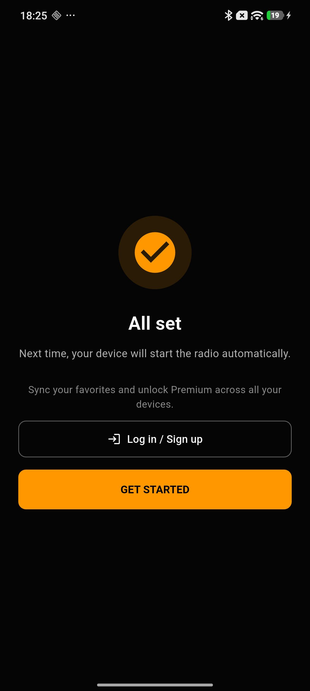

Реални снимки от самото приложение — не мокъпи, не обещания. Точно това виждаш, ако го инсталираш днес.
Избираш какво да се случва при свързване с колата си — веднъж, за всяко устройство. После Drive Radio просто се грижи за останалото, без нито един допълнителен тап.

Drive Radio те превежда точно през нужните разрешения, обяснени на прост език, и спира дотам. Никакви излишни екрани.

Drive Radio се появява направо в Android Auto, докато Waze или Maps карат отпред.

Навигация, музикално приложение и телефон — на един тап, без да търсиш из менюта докато шофираш. Списъкът със станции се появява с един тап и сам се скрива след кратко бездействие.

Всички български радиостанции на едно място — по държава, жанр или бързо търсене по име.

Откривай станции от различни държави и жанрове, без да напускаш Drive Radio.

Подреди ги по свой ред, с едно плъзгане. Твоите станции остават точно както ги искаш.

Пълна история на всичко изсвирено — търсене по песен или станция, групирано по дни.

Директна връзка към Spotify, YouTube Music, Deezer и още — точно за песента, която в момента върви.


Кратко въведение, после право към музиката — без излишни екрани.

Влез, за да синхронизираш любимите между устройствата си — или просто продължи без акаунт.

Навигация, музика, телефон — винаги на екрана, дори когато списъкът със станции сам се скрие.

Bluetooth устройства, език, платформа, плейбек — всичко ясно подредено.

Timer за заспиване, поведение на Next/Prev — ти решаваш.

Приложението говори твоя език, не само български.

Безплатното е достатъчно добро. Premium просто прави всичко още по-приятно.

Обратна връзка и подкрепа — на един клик разстояние.
Безплатно е и стартира само щом влезеш в колата.